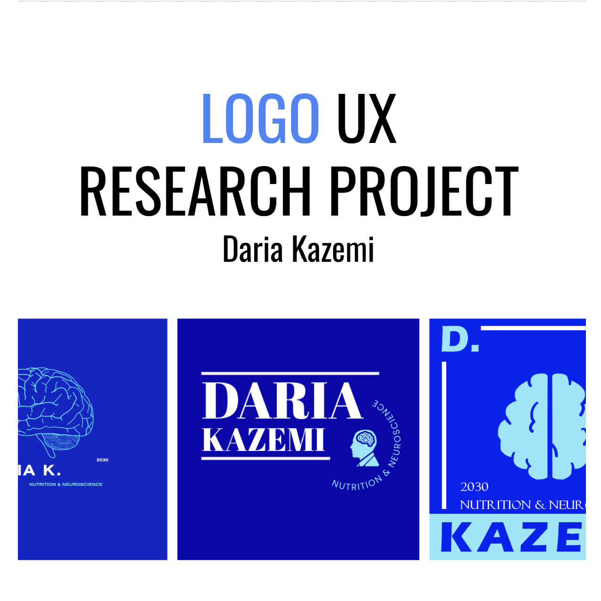

Design Beginnings
Logo A/B/C

Practicing design fundamentals in Canva, Adobe Express, and FireAlpaca.
UX Testing Logo Project

Introduction to survey design and logo revision based on participant feedback.
Good Design

Practicing visual information layout, analysis, and technical writing.